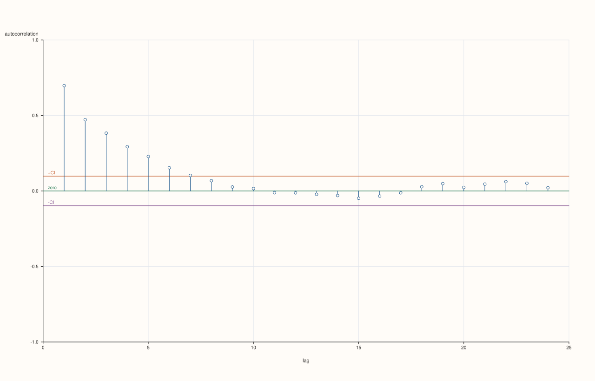
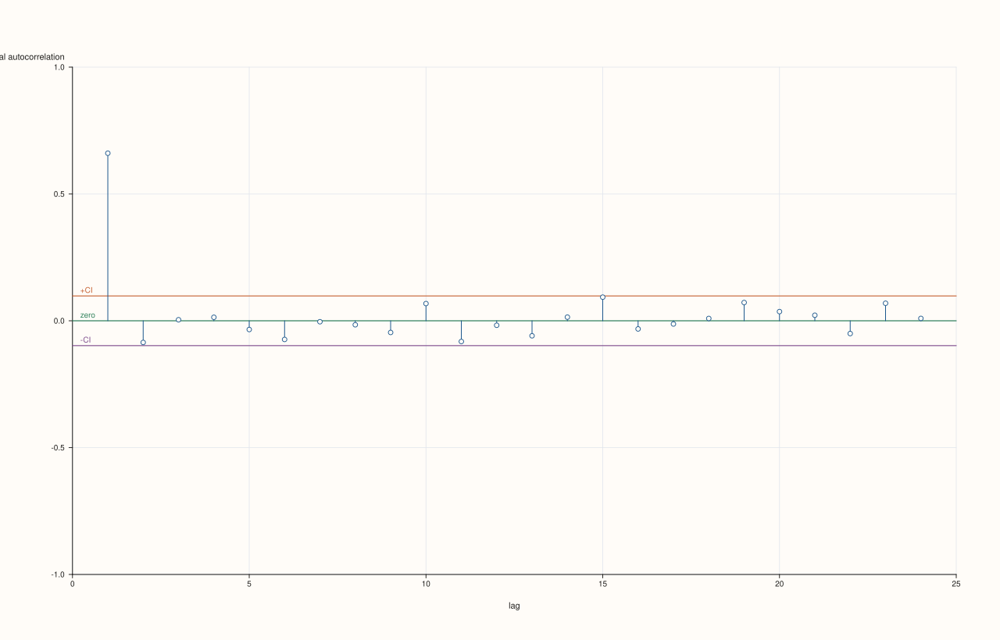
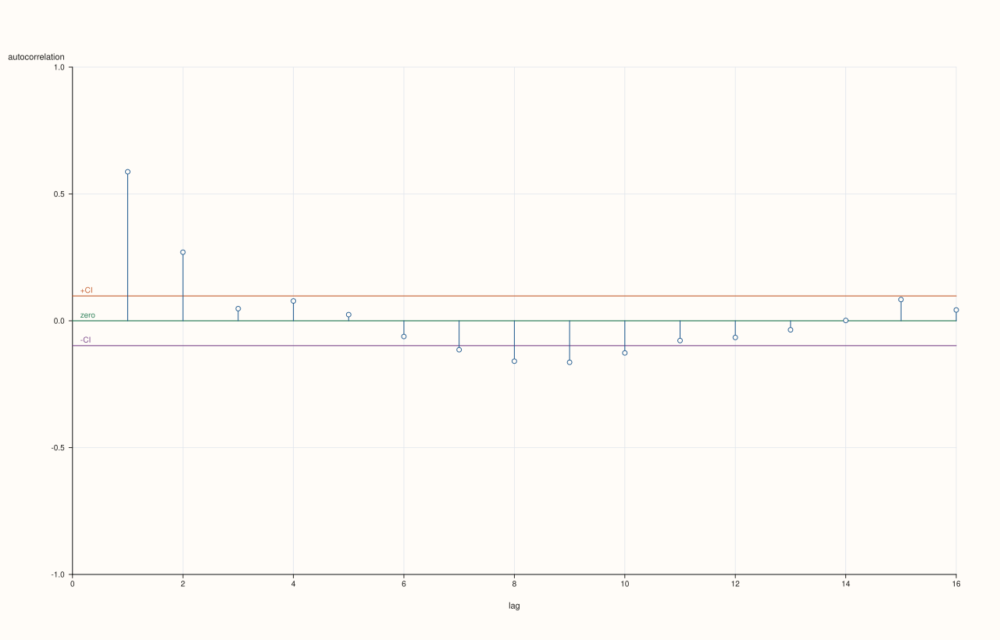
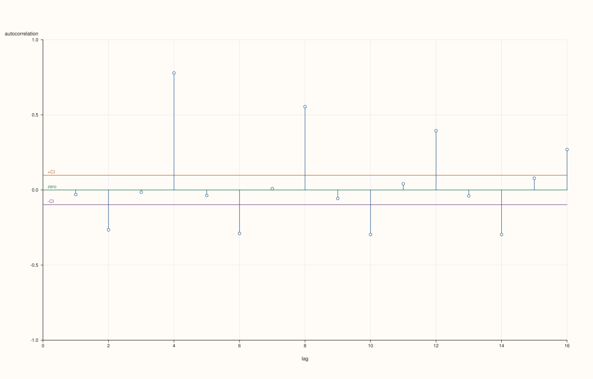

Autocorrelation and partial autocorrelation¶
The autocorrelation and partial autocorrelation functions of Chapter 1 are most often looked at, not read off as numbers. A plot shows the whole shape at once: a decay, a cut-off, a seasonal spike. The convention is a stem plot: one vertical bar per lag, with a shaded band around zero showing how large a bar must be before it is more than chance would produce for white noise. pluss::subsp::stats::ts::plot provides this in two layers.
plot::acf_payload(x, options)andplot::pacf_payload(x, options)return the plotted numbers as aCorrPlotPayload: thelags, thevaluesand the band limitsconf_lowandconf_high. Use them when you want your own table or chart.plot::acf(studio, x, options)andplot::pacf(studio, x, options)draw the stems, the band and the zero line into apluss::pl::Studiofigure and return it. A figure is saved withsave_svg(path),save_pdf(path)orsave_png(path, dpi).
CorrPlotOptions has max_lag (default 20), norm (AcfNorm::Biased or Unbiased), demean (true), include_zero_lag (false: the lag-0 bar is always 1 and only squashes the scale), show_confidence_band (true), confidence_level (0.95) and trace_width. The band is ±z/√n, with z the normal quantile of confidence_level, so about one bar in twenty lies outside a 95% band for a series with no autocorrelation at all.
The programs in this chapter write their figures into the directory named by the environment variable PLUSSMA_GUIDE_ASSETS when it is set, which is how the pictures below were produced; without it they only print the numbers.
The plot and its numbers¶
The first program draws the autocorrelation and partial autocorrelation of 400 observations of an AR(1) with coefficient 0.7, and prints the payload that sits behind the pictures.
#include <pluss/ma.h>
#include <pluss/pl/studio.h>
#include <cstdlib>
#include <iomanip>
#include <iostream>
#include <string>
namespace ts = pluss::subsp::stats::ts;
using pluss::Series;
int main() {
const auto f64 = pluss::Config{}.with_dtype(pluss::ScalarType::Float64);
ts::ArimaFit truth;
truth.ar = {0.7};
const Series y = truth.simulate(400, f64, /*seed=*/13);
ts::plot::CorrPlotOptions options;
options.max_lag = 8;
const auto a = ts::plot::acf_payload(y, options, f64);
const auto p = ts::plot::pacf_payload(y, options, f64);
const auto lags = a.lags.host<std::int64_t>();
const auto av = a.values.host<double>(), pv = p.values.host<double>();
std::cout << std::fixed << std::setprecision(3) << "95% band for white noise: +/- " << a.conf_high << "\n";
std::cout << std::setw(5) << "lag" << std::setw(10) << "acf" << std::setw(10) << "pacf" << "\n";
for (std::size_t i = 0; i < lags.size(); ++i) std::cout << std::setw(5) << lags[i] << std::setw(10) << av[i] << std::setw(10) << pv[i] << "\n";
if (const char* dir = std::getenv("PLUSSMA_GUIDE_ASSETS")) {
options.max_lag = 24;
pluss::pl::Studio acf_figure("acf", pluss::pl::Theme::paper());
ts::plot::acf(acf_figure, y, options, f64);
acf_figure.save_svg(std::string(dir) + "/ts_acf.svg");
pluss::pl::Studio pacf_figure("pacf", pluss::pl::Theme::paper());
ts::plot::pacf(pacf_figure, y, options, f64);
pacf_figure.save_svg(std::string(dir) + "/ts_pacf.svg");
}
}
Output
95% band for white noise: +/- 0.098
lag acf pacf
1 0.661 0.661
2 0.388 -0.085
3 0.224 0.004
4 0.137 0.014
5 0.066 -0.034
6 -0.015 -0.074
7 -0.054 -0.004
8 -0.068 -0.016


Read the two pictures together. The autocorrelation decays smoothly, roughly geometrically (0.66, 0.39, 0.22, 0.14, then inside the band from lag 5), below the theoretical 0.7, 0.49, 0.34, … by the sampling error that grows with the lag. The partial autocorrelation has a single tall bar at lag 1 (0.66) and then bars that are all inside the band. One tall partial bar followed by nothing, over a decaying autocorrelation, is the signature of an autoregression of order one. The band for 400 observations is ±0.098, which the printout confirms.
Recognising other shapes¶
The same two plots identify other processes. The program draws an MA(2) (autocorrelation cuts off after lag 2, partial autocorrelation decays) and a seasonal AR with period 4 (spikes at lags 4, 8, 12 in both), and prints the lags that leave the band.
#include <pluss/ma.h>
#include <pluss/pl/studio.h>
#include <pluss/tils/aux/output.h>
#include <cstdlib>
#include <string>
#include <utility>
#include <vector>
namespace ts = pluss::subsp::stats::ts;
using pluss::Series;
using namespace pluss::tils;
int main() {
const auto f64 = pluss::Config{}.with_dtype(pluss::ScalarType::Float64);
OutputEngine out;
ts::ArimaFit ma;
ma.ma = {0.7, 0.4};
const Series xm = ma.simulate(400, f64, /*seed=*/6);
ts::ArimaFit seas;
seas.sar = {0.8};
seas.seasonal_period = 4;
const Series xs = seas.simulate(400, f64, /*seed=*/6);
ts::plot::CorrPlotOptions options;
options.max_lag = 16;
const std::vector<std::pair<const char*, ts::plot::CorrPlotPayload>> payloads = {{"MA(2), acf", ts::plot::acf_payload(xm, options, f64)},
{"MA(2), pacf", ts::plot::pacf_payload(xm, options, f64)},
{"seasonal period 4, acf", ts::plot::acf_payload(xs, options, f64)},
{"seasonal period 4, pacf", ts::plot::pacf_payload(xs, options, f64)}};
for (const auto& [label, p] : payloads) out.writeln(label, "lags outside the band:", p.lags.masked_select(p.values.abs() > p.conf_high).host<std::int64_t>());
if (const char* dir = std::getenv("PLUSSMA_GUIDE_ASSETS")) {
pluss::pl::Studio f1("ma2 acf", pluss::pl::Theme::paper());
ts::plot::acf(f1, xm, options, f64);
f1.save_svg(std::string(dir) + "/ts_acf_ma2.svg");
pluss::pl::Studio f2("seasonal acf", pluss::pl::Theme::paper());
ts::plot::acf(f2, xs, options, f64);
f2.save_svg(std::string(dir) + "/ts_acf_seasonal.svg");
}
}
Output
MA(2), acf lags outside the band: [1, 2, 7, 8, 9, 10]
MA(2), pacf lags outside the band: [1, 2, 4, 5, 6, 8]
seasonal period 4, acf lags outside the band: [2, 4, 6, 8, 10, 12, 14, 16]
seasonal period 4, pacf lags outside the band: [2, 4, 6, 8]


The MA(2) autocorrelation has two large bars at lags 1 and 2 (0.59 and 0.27) and is within a few hundredths of zero at lags 3 to 6, which is the cut-off that names the order. Beyond it, lags 7 to 10 dip to about −0.11 to −0.16, just outside the band: a run of mild bars like that is what removing the sample mean and adjacent-lag correlation of the estimates produce, and a good reminder that the pattern to trust is the clear cut-off, not every bar beyond the band. The seasonal series shows spikes at lags 4, 8, 12 and 16 (0.78, 0.55, 0.39, 0.27), shrinking with each repetition, with negative bars of about −0.3 at the lags between them (2, 6, 10, 14). The negative bars are a finite-sample effect: four interleaved persistent chains wander away from the common mean in different directions, so after the mean is removed, observations half a period apart look negatively related. The spikes at the seasonal lags are the signature to look for; a plot makes both patterns obvious at a glance in a way that a list of numbers does not.
Changing the band and the lags¶
Two options change how the plot reads. A wider band (confidence_level = 0.99) is more conservative: fewer bars exceed it by chance, so one that does is more convincing, at the cost of missing some real but small ones. max_lag should be chosen with the sample size in mind: estimates at high lags rest on few pairs of observations and are noisy. The program counts the bars outside the band for a white-noise series (where none should be, apart from chance) at both confidence levels and several lag counts.
#include <pluss/ma.h>
#include <cmath>
#include <iomanip>
#include <iostream>
namespace ts = pluss::subsp::stats::ts;
using pluss::Series;
int main() {
const auto f64 = pluss::Config{}.with_dtype(pluss::ScalarType::Float64);
ts::ArimaFit white;
std::cout << std::fixed << std::setprecision(3);
std::cout << std::setw(10) << "max_lag" << std::setw(14) << "band (95%)" << std::setw(14) << "outside" << std::setw(14) << "band (99%)" << std::setw(14) << "outside" << " (average over 40 white-noise series)\n";
for (int max_lag : {10, 20, 40}) {
double out95 = 0.0, out99 = 0.0, band95 = 0.0, band99 = 0.0;
const int reps = 40;
for (int r = 0; r < reps; ++r) {
const Series x = white.simulate(200, f64, 100 + r);
ts::plot::CorrPlotOptions o;
o.max_lag = max_lag;
const auto a = ts::plot::acf_payload(x, o, f64);
o.confidence_level = 0.99;
const auto b = ts::plot::acf_payload(x, o, f64);
band95 = a.conf_high;
band99 = b.conf_high;
for (double v : a.values.host<double>()) out95 += std::fabs(v) > a.conf_high;
for (double v : b.values.host<double>()) out99 += std::fabs(v) > b.conf_high;
}
std::cout << std::setw(10) << max_lag << std::setw(14) << band95 << std::setw(14) << out95 / reps << std::setw(14) << band99 << std::setw(14) << out99 / reps << "\n";
}
}
Output
max_lag band (95%) outside band (99%) outside (average over 40 white-noise series)
10 0.139 0.425 0.182 0.125
20 0.139 0.800 0.182 0.150
40 0.139 1.475 0.182 0.400
With white noise, a 95% band lets through about one bar in twenty, so the expected number outside grows in proportion to max_lag: 0.43, 0.80 and 1.48 bars on average for 10, 20 and 40 lags (against 0.5, 1 and 2 expected), and the 99% band lets through fewer (0.13, 0.15 and 0.40 against 0.1, 0.2 and 0.4). The band shown is 0.139 for 95% and 0.182 for 99% at 200 observations. The lesson for reading a plot: a lone bar just outside the band, particularly at a high lag, is expected; what is not is a pattern, such as several consecutive lags, a clear decay or a spike at a seasonal lag.
Decisions and pitfalls¶
Plot the stationary version. An ACF of a trending series just decays slowly and says nothing about the dynamics; difference first (Differencing).
Leave out the lag-0 bar. It is always 1; including it compresses the rest (
include_zero_lagis false by default).Do not over-read single bars. One in twenty bars is outside a 95% band for pure noise.
Keep
max_lagmodest. A quarter of the sample size is a common ceiling; beyond it the estimates are noise.Use the payloads for tables. The
*_payloadfunctions return the same numbers without drawing.
Where next: Plots of the residuals applies the same pictures to the output of a fitted model.